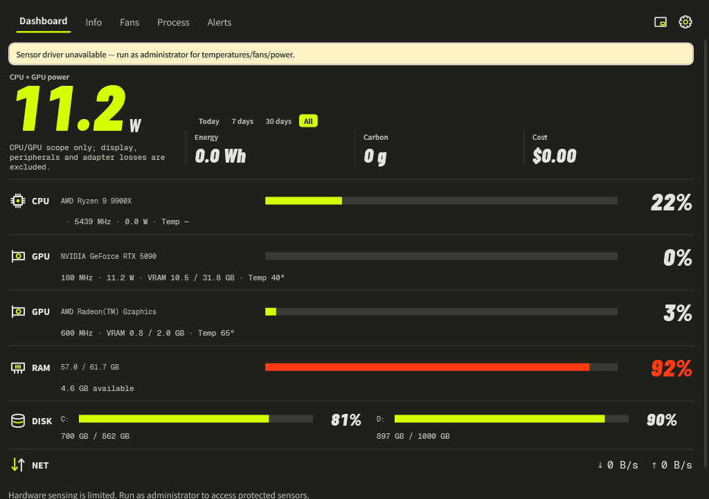

Troubleshooting & FAQ
Find the symptom, check the cause, and follow the recovery steps.
Some values show a dash
— means unavailable, not zero. Start with the hardware-sensing notice on the Dashboard.
- Run Momo as administrator to access protected sensors.
- Open Settings → Monitoring & alerts and enable Full hardware sensing if the driver offer is present.
- Let Momo reopen after installation, then use Read again when offered.
- If only one sensor is absent, check whether that specific device exposes it. Some integrated GPUs have no fan RPM; unsupported motherboard chips may expose no board fans.

The Fans page has no controls
Enable Show all fans to reveal hidden idle channels. A driver can expose monitoring without exposing writable control. If full sensing is already enabled, the board or firmware may not support LibreHardwareMonitor’s controls. Auto remains the correct option when custom commands are refused.
Watts differ from another program or a wall meter
Compare the same scope and sample time. CPU package, GPU board, GPU chip, battery-side discharge and wall input are different measurements. Notebook CPU + GPU power excludes other components. Estimates can depend on calibration; see Power, energy & cost.
A trend is empty or disappears after restart
Choose a supported metric and wait for samples. Live charts cover only this launch and up to 15 minutes; restarting clears that live buffer. Missing readings leave gaps. Daily energy and seven-day alert histories are stored separately.
No notification appears
Check that alerts are enabled, the correct primary GPU is selected, and the condition lasted beyond the sustained duration. The cooldown limits repeats. Windows Do Not Disturb can suppress notifications. Open Alerts to inspect recorded events.
Start with Windows fails
Run Momo as administrator, then save the preference again. It uses a scheduled logon task, not the Startup folder. At sign-in it runs in the tray after about 20 seconds. Double-click the tray icon to open the Dashboard.
Momo disappeared after closing
Check the system tray, including its hidden icons. If Run in the system tray is enabled, the window can hide while monitoring continues. Double-click the icon to restore it; right-click and select Exit to stop it.
Settings or history do not save
Open Data & Info and read any storage warning. Extract the whole package into a writable location, check available disk space and restart. Do not run inside a ZIP. Keep damaged files and backups until recovery is confirmed.
Collect a diagnostic report
Use --diag to save the sensor listing or --dump for a current sample; see Diagnostics & command line. When reporting an issue, include the version, Windows version, affected hardware model, symptom and sensor state. Review reports before sharing them.